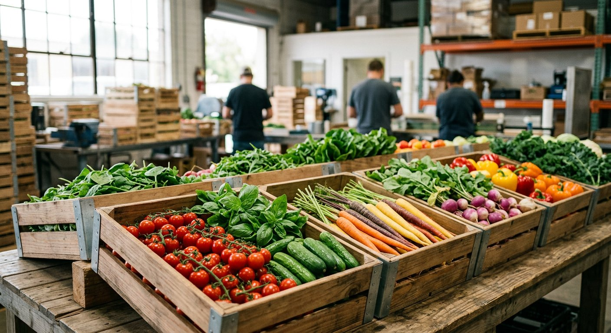

Measured Outcomes
Impact is measured in resilience, not vanity metrics.
We focus on the outcomes that strengthen farm businesses over multiple cycles: productivity, predictability, quality, and resource stewardship.
15M+
Liters of water optimized annually
90%
Projects delivered with phased rollout plans
Headline Results
Performance you can track, not just promise.
From resource efficiency to market readiness, we focus on outcomes that compound over seasons.
−0%
Average reduction in water intensity per harvest cycle
+0%
Yield uplift potential across integrated deployments
0×
Faster field-team onboarding vs. conventional setups

Our Lens
We define success across farm economics and environmental efficiency.
The most resilient operations balance output, quality, and resource performance together — not one at the expense of the others.
Yield Stability
Consistent output across weather volatility and staffing shifts.
Input Precision
Better visibility into water and nutrient use, with less waste.
Market Readiness
Infrastructure aligned to premium channels and buyer expectations.
The real shift was not a single season spike. It was finally having a system we could plan against.— A grower partner, on moving from reactive operations to managed performance
Start a Conversation
Discuss your goals
Share where you are today and where you want the farm to be — we'll map the path.